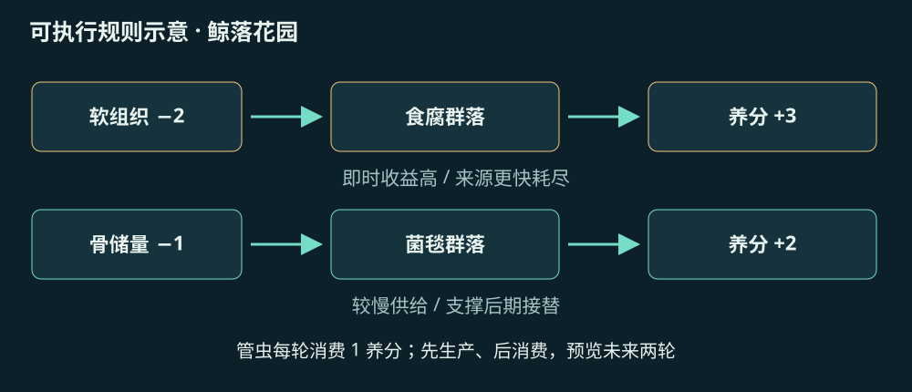
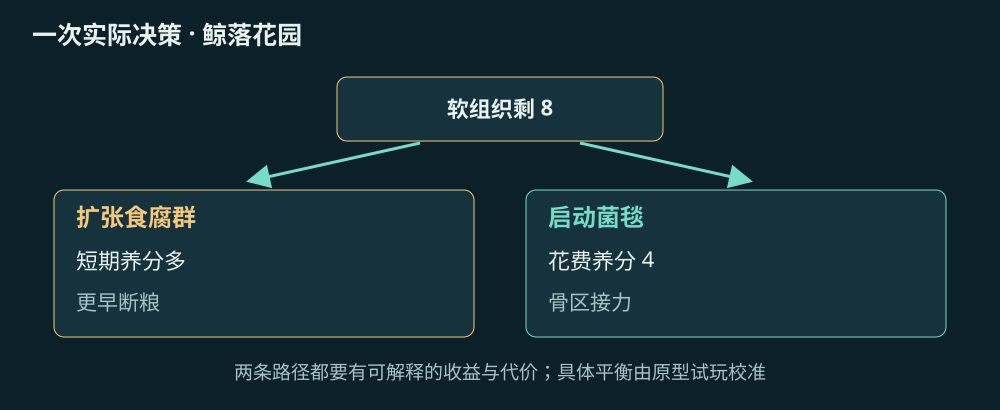
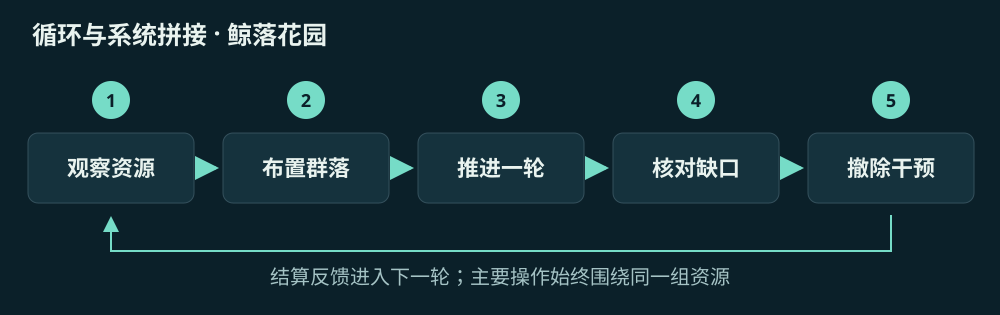
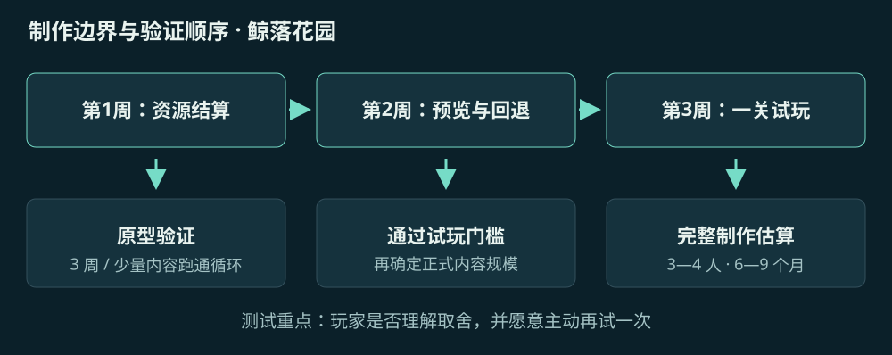

鲸落花园
用一头鲸最后的养分，养出一个不再需要你的海底世界。

1体验定位与场景
目标玩家： 喜欢自然、建造与低压规划的玩家
场景与视角： 固定斜俯视镜头覆盖一处鲸落：左侧尚有软组织，中部露出肋骨，右侧是贫瘠海床。玩家是微型生态维护机器人，场景随养分转移逐步亮起；最终主动撤掉干预设施，把舞台留给生物。
2操作与即时反馈
玩家操作： 鼠标选择生物群落，拖入栖息格，悬停显示未来两轮的养分收支；空格推进一轮。先引入食腐者释放可用养分，再培养菌毯，最后接续依赖骨区的群落。每次操作应同时改变空间外观与生态账本。
3关键取舍
典型决策： 第 6 轮软组织剩 8：新增两个食腐群落能快速扩张，却让食物更早耗尽；用 4 点养分启动菌毯，短期少一个群落，后期则有接力来源。需要玩家预判交接，而不是不停点击升级。
4目标与成长回报
胜负条件： 普通关：拥有 4 类群落，在撤掉全部临时设备后连续 3 轮无缺粮，且保留骨储量 ≥6。全部群落失活则失败；允许回退本轮，避免轻策略玩家被隐蔽连锁惩罚。
成长与内容： 从完整鲸体、散落骨区到海沟斜坡共 6 张手工地图；每关只增加一个环境变量。解锁的是新物种和布局方式，不是永久数值碾压。结算生成同机位前后对照图，作为可分享的成果。
5 · 规则如何落到一次操作

规则与资源： 原型采用 8×8 格、3 种资源：软组织、骨储量、可用养分。食腐群落每轮消耗软组织 2、产养分 3；菌毯每轮消耗骨储量 1、产养分 2；管虫群落消耗养分 1、增加多样性 1。资源转换均为设计抽象，不作为真实生物学数值。每轮先生产、后消费，缺粮群落暂停生长并亮出原因。

6 · 核心循环与玩法拼接

拼接方式： 主玩法是空间资源规划；副玩法只保留关末拍照与图鉴，占体验约 15%。图鉴记录本关稳定共存条件，反过来帮助下一关规划。不要同时加入角色装备、自由潜航和基地建造。
7 · 小团队怎样做出来

最小可玩原型： 1 张 8×8 地图、5 类群落、3 种资源、12 轮演替、1 个胜利目标；先用方块和图标做完整收支预览，再做场景生长表现。
正式版内容上限： 6 张地图、10 类群落、3 种环境事件、自由观赏模式；目标首通 3—5 小时，重玩来自生态布局。
必须删减： 删除完整食物网、个体级寻路、真实海水模拟与自由视角。生物按群落格结算，美术用同一骨架的 3 档覆盖层表现变化。
主要制作风险： 最大风险是生态运转不可读。原型阶段若玩家只能靠试错理解缺粮，先缩减到两条资源链，而不是增加物种。
原型验收门槛： 邀请 8 位目标玩家：至少 6 位能在第二局主动建立骨区接力，并说出断粮原因；这是内部立项门槛，不是行业基准。
图 E 对应本节全部制作要点：左侧先控制原型内容，中段用玩家行为验证风险，右侧只扩充已验证的循环。样本数量与门槛是本案的内部判断标准。

Terra Nil ↗
借鉴与改造： 借鉴 Terra Nil 的生态修复目标、分阶段变化与撤离收束；把主要决策改成鲸体有限养分的接力分配。
范围控制： 不复制其整套地貌改造工具；本案只制作一处鲸落及其周边。
开发者：Free Lives / Clockwork Acorn。资料核对：2026-10-21。截图为联网引用，概念分镜与规则图已保存在本地。